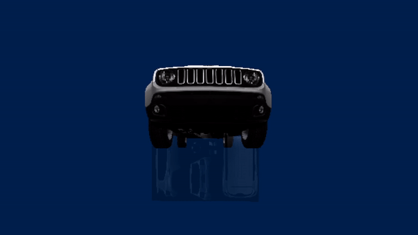

Adam Shaw
Programming Student
Staffordshire University
Hello and welcome, I am a programmer with a passion for creating and playing video games of varying genres. Outside of programming I enjoy playing chess, as well as being a member of my university's Chess Club.

A Spirit's Tale
This was a six person group project that spanned six weeks. A Spirit's Tale is a platformer puzzle game with stealth elements created in Unity. The areas I worked on were the level design,
death and respawn mechanics, level transitions, and the player's' attack.
Working as part of a team for six weeks made me understand how to effectively collaborate with people I had never met before. I also
used GitHub with multiple collaboraters for the first time, which was different however gave me valuable information.
3DS Max Space Store

This project is a 3D environment I made in 3DS Max; with an animation to accompany it. The inspiration of this project was a mix between Zathura: A Space Adventure (2005) and Job Simulator (2016). I created all of the assets for this project apart from the person's animation and model. I now focus on programming, however I can now appriciate the work that goes into creating art within the industry.

DirectX Environment

This project is a 3D Environment created with DirectX11. It showcases phong lighting, file read objects, texturing, transparency and cameras.
I also used object oriented programming for this project.
A noteable feature of this project was the addition of XML to read values from a file which made the code cleaner.
- Solid understanding of C++ and C#
- Broad maths knowledge
- Confident and adaptive problem solver
- Excellent with the Unity engine
- Experienced with working as part of a team
- Solid HTML knowledge
Staffordshire University
2021 - Present
I am currently in the second year of studying a degree in computer games programming.
Future Skills - Salford City College
2019 - 2021
I studied Games Design for two years and achieved three distinction stars.
The Nurture Group - Gavin Jones
2018 Summer
I worked as a yard man full time doing small jobs around the yard, mainly watering plants due to the heatwave.